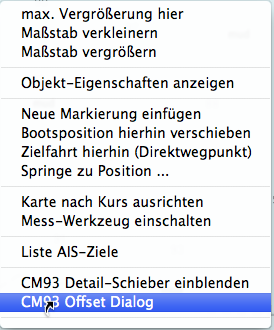
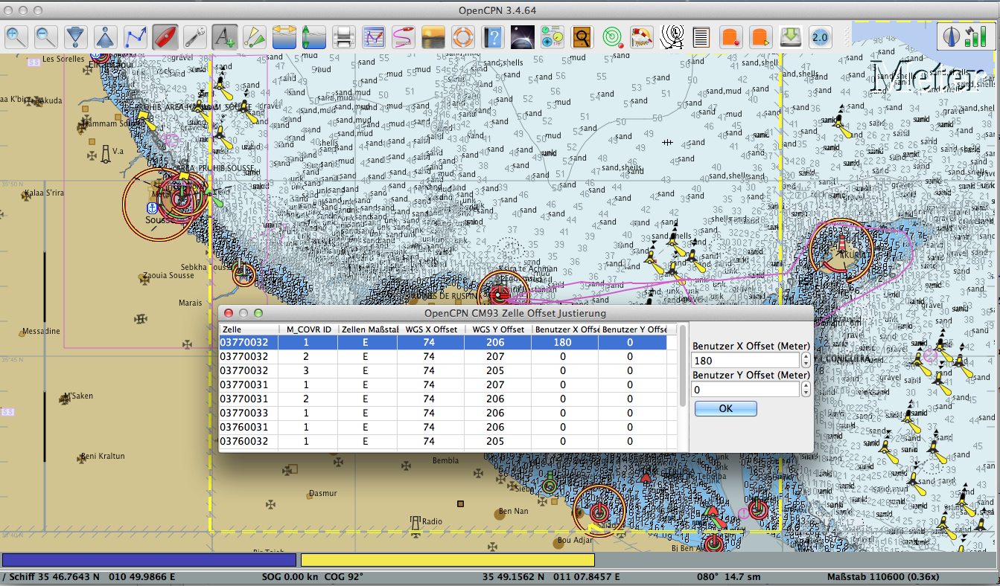
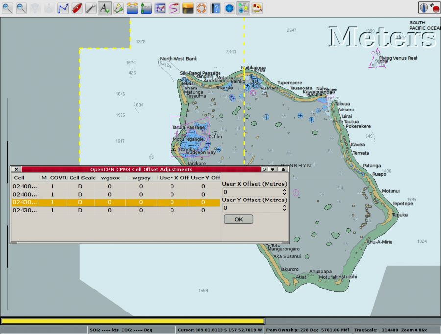
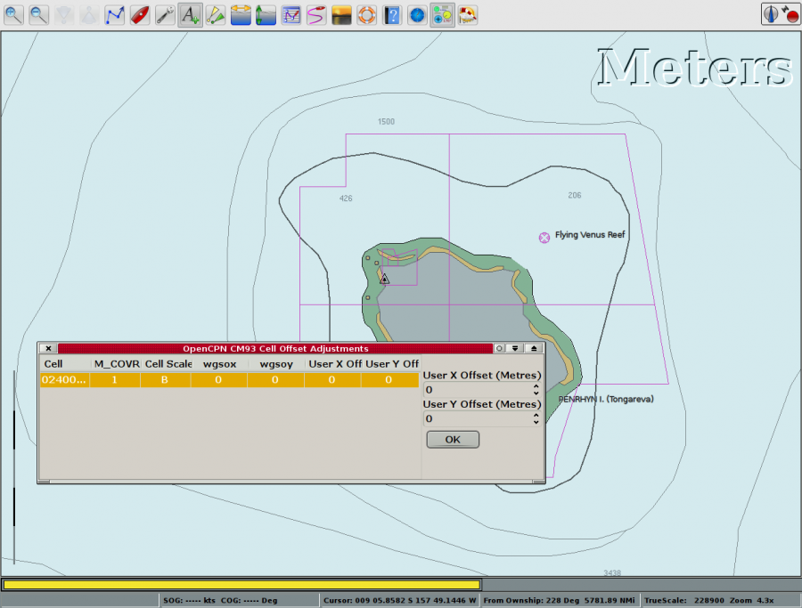
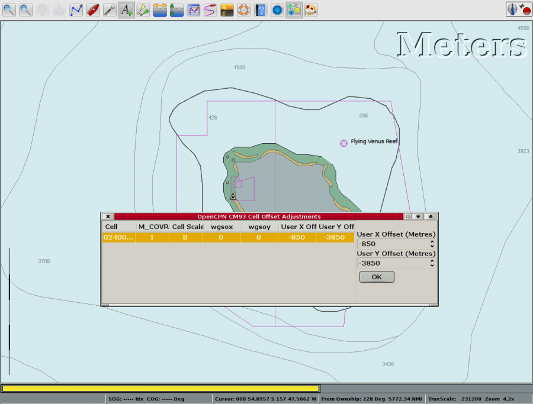

CM93 Offsets
Zur Verwendung:
Gehe auf den Einzelkarten Modus (also kein "Quilting"). Mit fn-F9 Taste "Quilting" Ein und Aus schalten.
Zoome den interessierenden Bereich.
Rechts-Klick und aktiviere "CM93 Offset Dialog".

Wähle in der Liste der Zellen bzw. M_COVR IDs die interessierende M_COVR. Der dieses M_COVR Objekt umfassende Bereich wird dann mit einer starken gelben Grenzlinie angezeigt.

Einige Zellen haben schon eingebaute Korrekturen. Die Werte wgsox und wgsoy sind Offsets, um die Original Kartenzelle auf WGS84 zu bringen. Siehe erste und dritte Zelle im Bild oben. Die Werte sind nur zur Information und können nicht geändert werden. Diese Korrekturen sind im Allgemeinen richtig aber nicht immer. Manchmal sind die Korrekturen falsch und manchmal gibt es keine Korrekturen, obwohl welche da sein sollten. Hier kommt nun das manuelle Offset Feature zum Tragen.
Um dieses Feature effektiv zu nutzen, muß ein geografischer Referenzpunkt bekannt sein. Beispielsweise gibt es ein NAVAID auf der Kartenzelle mit bekannter WGS84 Länge und Breite aus dem Leuchtfeuerverzeichnis. In dem Fall kann man einen Wegpunkt auf der Karte erzeugen, die Wegpunkt-Eigenschaften auf die bekannte Länge/Breite editieren und dann den CM93 Offset Dialog verwenden, um die Zelle/M_COVR so zu justieren, daß sie mit dem NAVAID übereinstimmt.
Es kann auch ein Kap oder anderer Punkt, dessen Ort absolut bekannt ist, als Referenz verwenden oder eine andere genauere Karte wie vertrauenswürdige gescannte Raster-Karte oder eine georeferenzierte Foto-Karte.
Um zu sehen, wie dieses Feature arbeitet, ist hier ein Beispiel vom Süd-Pazifik.

Das ist Tongareva, auch Penhryn Atoll genannt. Eine Markierung mit einem Dreieck wurde am westlichsten Punkt der Insel gesetzt.

Auszoomen zur nächst kleineren Kartenskalierung läßt das Dreieck nach NNO springen. Zeit also zur Korrektur, da wir zumindest bei diesem Beispiel annehmen, daß die Karte mit der größeren Skalierung korrekt ist.

Ziemlich große Korrekturen bringen die Karte zu einem annehmbaren Ergebnis.
Verwenden Sie die Klappmenüs auf der rechten Seite des Dialogs zur Einstellung der gewünschten Anwender Offsets. Man kann auch die Zahlen direkt eingeben. Positive Korrekturen sind für Nord und Ost.
In einigen Fällen ist nicht ganz klar, welche M_COVR ID ihre Position repräsentiert. Ein einfacher Test legt offen, wenn eine Marke auf (große) Korrekturen reagiert.
Die Offsets werden automatisch in den binären M_COVR Cache Dateien gespeichert, die sich im Programm Verzeichnis als CM93/ befinden.